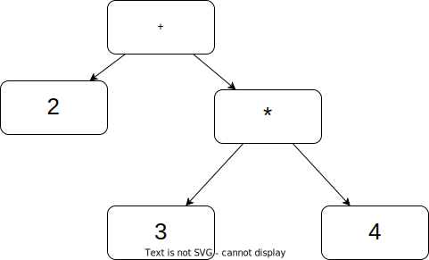

KDOC 47: 『低レイヤを知りたい人のためのCコンパイラ作成入門』
低レイヤを知りたい人のためのCコンパイラ作成入門は、compilerの作り方の本。
メモ
- 最低限の実装からインクリメンタルに開発していく流れがよい
- コンパイラが動作するマシンのことを「ホスト」、コンパイラが出力したコードが動作するマシンのことを「ターゲット」という
- 仮に関数呼び出しが1段しかなければ、リターンアドレスはCPUの適当なレジスタに保存しておけばいいが、関数呼び出しはいくらでも深くできるのでリターンアドレスはメモリ(上にあるスタック)に保存する必要がある
再帰下降構文解析法でパーサを書くときの基本的な戦略は、非終端記号1つ1つをそのまま関数1つ1つにマップするということ
スタックマシンの解説。2+3*4 をする場合。

- 左の部分木をコンパイル。数値の2をコンパイルすることになり、結果はそのままPUSH 2 [2]
- 右の部分木をコンパイル。再帰的に部分木の左側をコンパイルしてPUSH 3。部分木の右側をコンパイルしてPUSH 4 [2 3 4]
- コード生成関数は再帰呼び出しを元に戻りながら、部分木の演算子の型に合わせたコードを出力していく。
- 最初に出力されるのはスタックトップの2つの要素をそれらを掛けたもので置き換えるコード [2 12]
- 次にスタックトップの2つの要素をそれらを足したもので置き換えるコード [14]
結果として、以下のようなアセンブリが出力される。
PUSH 2 PUSH 3 PUSH 4 MUL ADD
- レジスタマシンでスタックマシンをエミュレートする
- x86-64のRSPレジスタはスタックポインタとして使うことを念頭に置いて設計されている。x86-64のpushやpopといった命令は、暗黙のうちにRSPをスタックポインタとして使ってその値を変更しつつ、RSPが指しているメモリにアクセスする
push 1 push 2 pop rdi pop rax add rax, rdi push rax
86_64には「RSPが指している2つの要素を足す」という命令はないので、いったんレジスタにロードして加算し、その結果をスタックにプッシュしなおす必要がある。
2*3+4*5をx86-64で実装する。
// 2*3を計算して結果をスタックにプッシュ push 2 push 3 pop rdi pop rax mul rax, rdi push rax // 4*5を計算して結果をスタックにプッシュ push 4 push 5 pop rdi pop rax mul rax, rdi push rax // スタックトップの2つの値を足す pop rdi pop rax add rax, rdi push rax
技巧を凝らした簡潔なコードを書くことを常に目指す必要はありません。そういうことを目指していると、それ以上難しくできないところまでコードを難しくしてしまいがちです。
コードを書いている本人はそのコードのエキスパートになるので、エキスパート目線から見た簡潔で無駄のないコードを良いコードだと感じがちですが、大半のコードの読者は筆者と同じ感覚は共有しておらず、そもそもそこまで習熟する必要性もないので、コードの筆者としての自分の感覚はある程度疑ってかかる必要があります。「もっといい書き方がありそうな単純なコード」を必要に応じてあえて書くというのは、理解しやすくメンテナンスしやすいプログラムを作るための一つの重要なテクニックです。
cmp命令。
pop rdi pop rax cmp rax, rdi sete al movzb rax, al
- 比較結果は比較命令の結果は特別なフラグレジスタにセットされる
- フラグレジスタは整数演算や比較命令が実行されるたびに更新されるレジスタで、結果が0未満かどうかといったビットを持っている
- フラグレジスタは通常の整数レジスタではないので、RAXに比較結果をセットしたい場合、フラグレジスタの特定のビットをRAXにコピーする必要がある。それをするのがsete命令
- sete命令は直前のcmp命令で調べた2つのレジスタが同じだった場合に指定したレジスタに1をセットする。それ以外の場合には0をセットする
- ALはRAXの下位8ビットを指す別名レジスタにすぎない。seteがALに値をセットすると、自動的にRAXも更新されることになる
- RAXをALで更新するとき上位56ビットは変わらないので、RAX全体を0か1にしたい場合、上位56ビットはゼロクリアする必要がある。movzb命令でそれを行っている
- 分割コンパイルは1つのプログラムに複数のソースファイルに分割して書いて、別々にコンパイルすること
- 分割コンパイルでは、コンパイラはプログラム全体ではなく、プログラムの断片を読んで、それに対応した断片を出力することになる。単体では実行不可能なプログラムの断片の入ったファイルのことを「オブジェクトファイル」という。オブジェクトファイルをまとめて1つの実行ファイルにするプログラムをリンカという
- 標準ライブラリは普通はコンパイル済みのオブジェクトファイル形式で配布されている
- 分割コンパイルを行わないと、1行変更しただけでもコード全体をコンパイルし直すことになる
- callで飛ぶ先のアドレスは分割コンパイル時にわからないが、アセンブラはとりあえずアドレス0にジャンプするようなcall命令を出力しておいて、オブジェクトファイル内に「オブジェクトファイルのXバイト目をYという名前の関数のアドレスで修正する」という情報を残しておくことができる
- リンカはその情報を見て、実行ファイルのレイアウトを決めた後、プログラム断片をバイナリパッチングして、ジャンプ先のアドレスを修正する(リロケートという)。したがって分割コンパイルするためには関数の名前は必要だが関数のアドレスは不要
- 宣言に対して関数のコードを含むものを「定義」という。宣言を示すキーワードexternがある
- Cで他のCファイルをコンパイルするときに必要になる宣言をまとめてヘッダファイルを書く。宣言を書いておいて、それを必要とする別のCファイルに
#include "foo.h"のように書いておくと、#includeの行がfoo.hファイルの内容に置き換えられる - コンパイラは宣言を読み込んだときに特に何のアセンブリも出力しない。宣言は別のファイルに含まれている関数や変数を使うために必要な情報であって、それ自体は関数や変数を定義するものではないから
- C標準ライブラリについてくるヘッダファイルをインクルードすることで、printfの存在とその型をコンパイラは知ることができ、printfの関数呼び出しをコンパイルできるようになる
- Cの言語仕様では、コンパイラがファイル全体を読み込むことをせずに、関数1つ1つを先頭から順にコンパイルしていけるようになっている。ファイルの後ろで定義されている関数を使いたい場合、事前にその関数の定義を書いておく必要がある。そういった宣言を前方宣言という
- 関数も変数もアセンブラにおいてはただのラベルになっていて、同じ名前空間に属している
- 宣言は変数の型だけをコンパイラに教えるためのものなので、具体的な初期化式は必要ない
- 宣言と定義は異なる
- CPUを完全にハングさせるF00Fバグ
- Cのstaticキーワードには2つの用途がある
- ローカル変数にstaticをつけて、関数を抜けた後でも値が保存されるようにする
- グローバル変数や関数にstaticをつけて、その変数や関数のスコープをファイルスコープにする
- 共通性はとくにないにも関わらず同じキーワードになってしまっている
- ローカル変数を関数呼び出しごとに別々にもたせるために、Cではローカル変数はスタックに置くことになっている
- fが呼ばれた時点のスタックトップは、そのリターンアドレスが入っている
{ ... }ブロックは、複数のステートメントをまとめて1つのステートメントにする効果があるifやwhileは条件式が成立したときに実行されるステートメントを1つしか許していない。が、ブロックを実装することでCと同じように{}でくくった複数の文を書ける- 関数本体もブロックで、
ifやwhileの後に書く{...}と文法的には同じ
- 関数本体もブロックで、
- sizeofは見た目は関数だが、文法的には単項の演算子
Cでは、a[3]は*(a+3)と等価であるものとして定義されている- 配列は、その配列の先頭要素を指すポインタに暗黙的に変換される
*(a+3)は、配列aの先頭要素をさすポインタに3を足したものをデリファレンスする、という意味
Cでは、配列アクセスのための[]演算子はない。[]はポインタ経由で配列要素にアクセスするための簡便な記法にすぎない- 言語上で値が実際にどう取り扱われているかは、アセンブリからわかる
- 言語仕様をよく理解している人のことを、言語仕様を法律に見立てて言語弁護士ということがある
言語弁護士［名詞］: 経験豊富な、あるいはシニアなソフトウェアエンジニアのうち、1つ以上のプログラミング言語について、（ほぼ）すべての有益および奇妙な機能とその限界について精通している人物のこと。ある人物が言語弁護士かどうかは、質問に対して、200ページ以上のマニュアルに散らばった5つの文を示して「ここを見ればよかったのに」と答えられるかどうかで判別できる。
Cではa[3]は*(a+3)になる- グローバル変数はメモリ上の固定の位置にある
int x; int y[20]; int main() { return x + y[5]; }
x: .zero 4 y: .zero 80 main: movl y+20(%rip), %edx movl x(%rip), %eax addl %edx, %eax ret
- ローカル変数はスタック上にある
int main() { int a = 1; return a; }
main: pushq %rbp movq %rsp, %rbp movl $1, -4(%rbp) movl -4(%rbp), %eax popq %rbp ret
- スタティックリンク: 1つの実行ファイルにすべてのコードやデータがまとめて入っている単純な実行形式
- リンカの入力になるオブジェクトファイルには、テキストとデータが別々に入っている
- リンカは複数のオブジェクトファイルから読んできたテキストを連結して1つのテキストセグメントに配置し、同時に複数のオブジェクトファイルから読んできたデータを連結して1つのデータセグメントに配置する
- オブジェクトファイル → リンク → 実行ファイル

- グローバル変数はデータセグメントに入っている。main関数の実行前にセットされる。main関数の実行前に式を実行する方法はない。なのでグローバル変数に入れられる値はリンク時に値が完成して、実行ファイルにそのままのバイト列として入れられるものでないといけない
- スタティックリンクされた実行ファイルは実行時に他のファイルを必要としない。例えば、printfのコードがlibcから実行ファイルにコピーされる。したがって実行するときはlibcは必要ない。必要なコードやデータは実行ファイルにコピーされているから
- スタティックリンクではすべてのグローバル変数やデータのアドレスがリンク時に決定する
- 変数
xが**intという型を持っているとする => 型記法* * int- xの型は何か -> ポインタ
- そのポインタが指している型は何か -> ポインタ
- そのポインタが指している型は何か -> int
- そのポインタが指している型は何か -> ポインタ
- xの型は何か -> ポインタ
- 変数
xが[]intという型を持っているとする => 型記法[20] * int- xの型は何か -> Array
- その配列の要素の型は何か -> ポインタである
- そのポインタが指している型は何か -> int
- その配列の要素の型は何か -> ポインタである
- xの型は何か -> Array
void (*signal(int, void (*)(int)))(int);
- ネストしている型の読み方
- 宣言
int (*x) ()の、型を考える - カッコの外側の型は
int y()という見た目になるのでfunc() int - カッコの内側の型は
* ___という型を表している - 全体の型としては、組み合わせて
* func() int
- 宣言
- カッコの外側は
void x (int)という見た目になるのでfunc(int) void - カッコの内側の型は
*signal(int, void (*)(int))。func(引数1, 引数2) * ___- 第一引数は
int - 第二引数
- 外側のカッコは
func(int) void - 内側のカッコは
*___ - 全体としての型は
* func(int) void
- 外側のカッコは
- 第一引数は
- 全体の型としては、
func(int, * func(int) void) * func(int) void